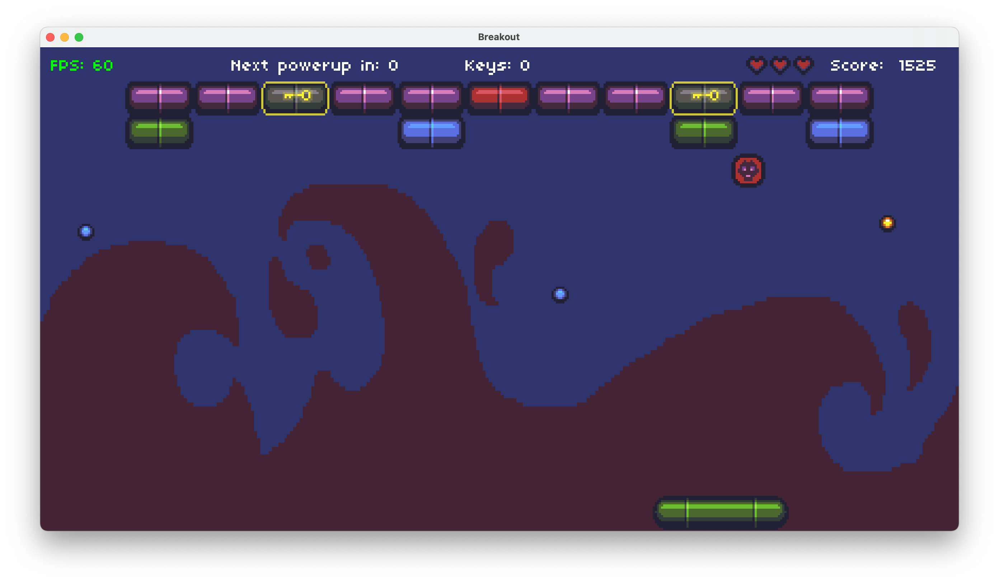

Breakout

About the game
This is single player game.
In this game, a player will be provided with a paddle and a ball using which he has to break the bricks shown above. At the start you will be provided with a medium sized paddle and a ball to break all the bricks. You will then have try to break all the bricks and when you do you move to the next level which will be more difficult. Once you have beaten a highscore you will be asked for a nickname and enter it there. Then you can show off with family and friends with proof that you are at the top of the leaderboard.
How to play?
- When you open the game, you can move between start and high scores using the up and down arrow keys.
- Press enter on start to start the game.
- You can choose the colour of the paddle by using the arrow keys to view all the paddles and press enter when you find the one you like the most.
- Now press enter to serve.
- On the top left corner you can see FPS which is frames per second and is just meant for display.
- Next you will see Next powerup in: __; it shows the number of hits required to generate a new powerup in the game.
- Next you can see keys: __; it shows the number of keys that you have at the moment.
- Next you can see some hearts those are the number of lives that you have in the game.
- Last but not the least, you can see your score which is the most important.
- There are two types of powerups: 1. Multi-ball powerup, 2. key powerup
- The key powerup adds one key to the number of keys you have at present and it allows you to break one locked block
- The Multi-ball powerup generated two more balls for you which makes it easier to finish the game.
- Break all the bricks by hitting them with the ball and you win!
- You can press space to pause the game.
Game release date
- The game was first released on January 25 2021
- The current version is 1.01